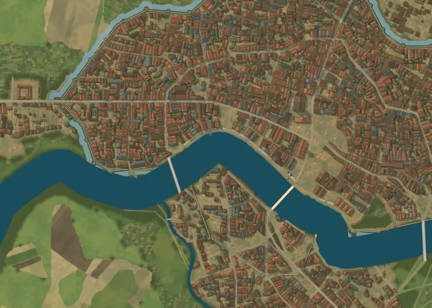

Ville médiévale organique (Europe)
Une ville médiévale née par accrétion : rues sinueuses rayonnant depuis un marché, parcelles étroites de bourgeois sous des maisons à pans de bois et pignons, une église paroissiale dans chaque quartier.
- Plan
- organique
- Enceinte
- irrégulière
- Niveaux
- 2–4
- Toit
- à pignon
Chiffres et détails
| Zone | Hab. par ha | Façade (m) | Profondeur (m) | Emprise |
|---|---|---|---|---|
| Centre | 185 | 5.5–9 | 24–42 | 90–96 % |
| Couronne | 120 | 6.5–11 | 30–50 | 78–86 % |
| Faubourg | 55 | 7–13 | 30–60 | 64–74 % |
| Village | 35 | 18–40 | 40–80 | 12–30 % |
Plans de maison
- Noyau
- marché
- Fortification
- selon la taille de la ville
- Pente
- 38°
- Matériau des murs
- timber
- Types de fermes
vierkanthofu-yardl-yard